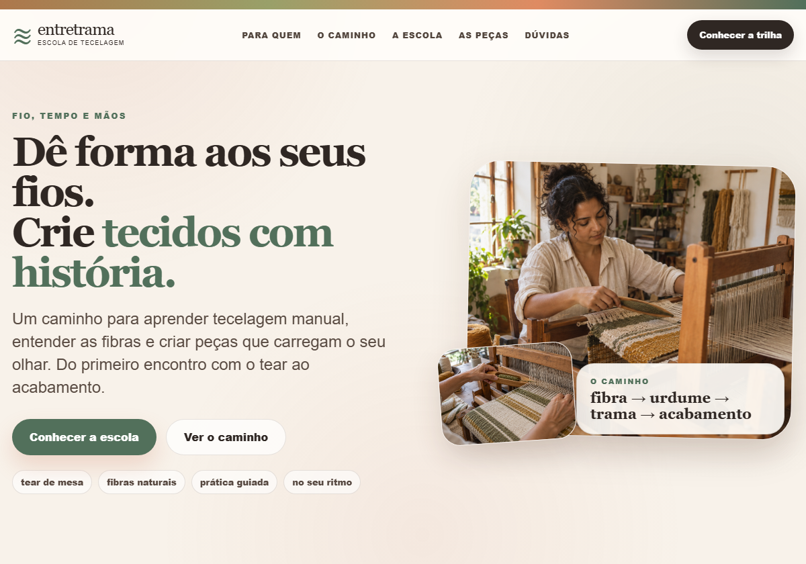

Soberania Labs / apresentações locais
Sites que dão forma
a uma proposta.
Uma coleção de páginas de educação, trabalho autoral e comunidade. Escolha um projeto e alterne entre sua abertura e um trecho do conteúdo.

Coleção de prévias locais. Entretrama é fictícia e usa fotografias geradas. SHÅLA é uma reconstrução de referência.
Voltar ao laboratório